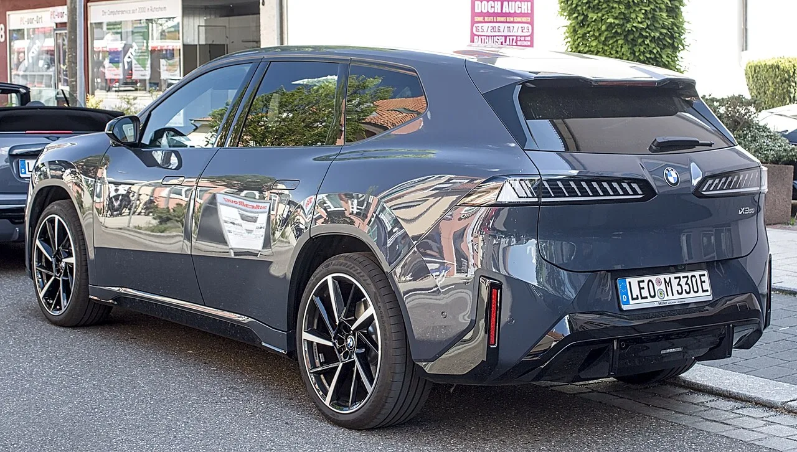

▲ BMW는 2025년 9월 IAA 모빌리티 뮌헨에서 노이어 클라쎄 최초 양산 모델인 뉴 iX3를 세계 최초로 공개했다 ⓒ Alexander Migl, Wikimedia Commons (CC BY-SA 4.0)
계약자는 5,000명이 넘는데, 실제로 번호판을 단 차는 432대뿐이다. BMW코리아가 지난 6월 국내 출시한 노이어 클라쎄(Neue Klasse) 최초의 양산 전기차 '뉴 iX3' 이야기다. 흥행에 성공한 신차가 오히려 물량 부족이라는 역설적인 벽에 부딪힌 모양새다. 3월 사전계약부터 9월 현재까지 확인된 사실만 정리했다.
1. 계약 5,000대, 등록은 432대 — 무슨 일이 벌어지고 있나
BMW코리아는 지난 3월 19일 뉴 iX3의 사전 예약을 시작했다. 반응은 즉각적이었다. 스타뉴스 보도에 따르면 사전 예약 개시 사흘 만에 신청 대수가 2,000대를 넘어섰고, 이후에도 계약이 이어져 정식 출시 시점인 7월까지 누적 4,500대, 9월 현재는 누적 계약 5,000대를 돌파한 것으로 전해졌다.
문제는 그다음이다. 데일리한국 보도에 따르면 7~8월 두 달간 국내 신규 등록 대수는 432대에 그쳤다. 사전계약 누적 물량의 10분의 1에도 못 미치는 수준이다. BMW코리아 딜러 안내에서도 "일부 색상과 사양을 적용하면 6개월 이상 기다려야 한다"는 설명이 나오고, 초기 신청자나 한정판 '퍼스트 에디션'에 당첨되지 못한 계약자는 연내 출고를 장담하기 어렵다는 이야기까지 전해진다.
| 시점 | 내용 |
|---|---|
| 2026년 3월 19일 | 국내 사전 예약 개시, 3일 만에 2,000대 돌파 |
| 2026년 6월 18일 | 정식 국내 출시 발표, SE 트림 추가(7,990만원부터) |
| 2026년 7월 6일 | 국내 인도(출고) 시작 |
| 2026년 7~8월 | 신규 등록 432대에 그침, 누적 계약은 약 4,500대 |
| 2026년 9월 | 누적 계약 5,000대 돌파, "일부 사양 6개월 이상 대기" 안내 |
BMW코리아의 사전 예약 공식 보도자료는 아래에서 확인할 수 있다. 보도자료 바로가기

▲ 뉴 iX3는 BMW의 새로운 시대를 상징하는 모델로 전시되고 있다. 인기와 별개로 국내 공급은 수요를 따라가지 못하는 상황이다 ⓒ Alexander Migl, Wikimedia Commons (CC BY-SA 4.0)
2. 노이어 클라쎄란 무엇인가 — 1960년대 헤리티지를 되살린 전용 플랫폼
뉴 iX3는 BMW가 '노이어 클라쎄(Neue Klasse)'라는 이름을 내건 첫 양산차다. 노이어 클라쎄는 1960년대 BMW를 파산 위기에서 구해낸 오리지널 '노이에 클라세' 세단에서 이름을 따온 완전 신설계 전기차 전용 플랫폼으로, BMW는 이를 '1960년대 부활에 맞먹는 재창조'로 자평하고 있다. 올리버 집세 BMW 회장은 공식 발표에서 '거의 모든 것이 새로워졌지만, 그 어느 때보다 BMW답다'는 말로 이 모델을 소개했다.
디자인에서 가장 눈에 띄는 변화는 세로로 길게 선 키드니 그릴이다. 1960년대 오리지널 노이에 클라세의 그릴 비율에 대한 오마주로, 크롬 장식을 걷어내고 대신 웰컴·굿바이 라이트 시퀀스를 갖춘 새로운 헤드라이트 신호 체계를 적용했다. 후면은 차체 폭 대부분을 가로지르는 얇은 라이트바로 마감돼 BMW 특유의 'L자' 테일램프 모티프를 현대적으로 재해석했다.
📍 실내의 핵심, '파노라믹 iDrive'
뉴 iX3는 BMW 최초로 '파노라믹 iDrive'를 탑재한 양산차이기도 하다. 앞유리 A필러부터 A필러까지 차체 폭 전체를 가로지르는 헤드업 디스플레이와, 운전대 옆에 자리한 17.9인치 중앙 디스플레이가 조합된 구조다. 계기판을 없애고 정보 표시 영역을 크게 넓힌 것이 특징이며, 센터페시아는 도어 트림까지 자연스럽게 이어지는 '랩어라운드' 형태로 디자인됐다.

▲ 세로로 선 키드니 그릴은 1960년대 오리지널 노이에 클라세에 대한 오마주다. 좌우 헤드라이트가 그릴 양옆으로 길게 이어진다 ⓒ Alexander Migl, Wikimedia Commons (CC BY-SA 4.0)
3. 배터리·주행거리·성능 — 6세대 eDrive와 800V 아키텍처
뉴 iX3(50 xDrive 기준)는 원통형 셀을 적용한 새로운 고전압 배터리와 800V 아키텍처를 앞세운다. BMW에 따르면 6세대 eDrive 시스템은 기존 대비 에너지 밀도를 20% 끌어올리고 충전 속도를 30%, 주행거리를 30% 늘렸다.
| 항목 | 내용 |
|---|---|
| 배터리 용량 | 108.7kWh(순정격), 원통형 셀 적용 |
| 주행거리 | WLTP 최대 805km / 국내 인증 기준 최대 611km |
| 모터 구성 | 듀얼 모터, 사륜구동(xDrive) |
| 합산 출력 | 469마력(345kW) |
| 토크 | 65.8kg·m(645Nm) |
| 가속성능 | 0→100km/h 4.9초 |
| 최고속도 | 210km/h |
| 충전 | 800V 아키텍처, 최대 400kW급(국내 350kW급) 초급속 충전, 10분 충전 시 국내 인증 약 250km(WLTP 372km) 추가 |
| 공기저항계수 | Cd 0.24 |
| 차체 크기 | 전장 4,782mm × 전폭 1,895mm × 전고 1,635mm |
복합 전비는 4.8~4.9km/kWh 수준으로, BMW코리아는 이를 '동급 최고 수준'이라고 밝혔다. WLTP 기준과 국내 인증 기준의 주행거리 수치 차이(805km vs 611km)가 큰 이유는 두 기준의 시험 방식과 조건이 다르기 때문으로, 실제 체감 주행거리는 국내 인증 수치에 가깝다고 보는 것이 합리적이다.

▲ 전용 전기차 플랫폼답게 엔진이 없는 보닛 아래에는 별도의 적재 공간(프렁크)이 마련됐다 ⓒ Alexander Migl, Wikimedia Commons (CC BY-SA 4.0)
4. 국내 가격표 — SE부터 M 스포츠 프로까지
정식 출시와 함께 공개된 국내 판매 가격은 다음과 같다(부가세 포함, 개별소비세 3.5% 적용 기준).
| 트림 | 가격 | 비고 |
|---|---|---|
| 50 xDrive SE | 7,990만원 | 정식 출시 시점에 새로 추가된 기본형 트림 |
| 50 xDrive M 스포츠 | 8,690만~8,710만원 | 3월 사전계약 당시 공개된 트림 |
| 50 xDrive M 스포츠 프로 | 9,190만원 | 최상위 트림 |
✅ 사전계약 때보다 진입 가격이 낮아진 이유
· 3월 사전계약 당시에는 M 스포츠(8,690만원)와 M 스포츠 프로(9,190만원) 두 트림만 공개됐다
· 6월 정식 출시 시점에 더 낮은 가격의 SE 트림(7,990만원)이 추가되며 진입 장벽이 낮아졌다
· 이는 초기 사전계약자 상당수가 M 스포츠 이상 트림에 몰려 있었다는 뜻이기도 하며, 이후 대기열에 SE 트림 수요까지 더해진 구조다
5. 왜 물량이 부족한가 — 유럽發 수요와 헝가리 공장의 속도
물량 부족의 핵심은 한국만의 문제가 아니라는 데 있다. 오토스파이넷 보도와 BMW그룹 발표를 종합하면, 뉴 iX3는 출시 후 1년 만에 유럽에서만 누적 주문 10만대를 넘어서며 BMW 신차 사상 가장 성공적인 첫해 출시 기록을 세웠다. 이 시기 유럽에서 접수된 BMW 순수전기차 주문 3대 중 1대가 iX3였을 정도로 수요가 집중됐다. 전 세계 누적 주문량은 별도로 공개되지 않았다.
공급을 책임지는 곳은 헝가리 데브레첸에 새로 지은 공장 하나뿐이다. 이 공장은 BMW 생산 네트워크 중 최초로 재생에너지만으로 가동되는 신설 공장으로, 2025년 10월 양산 개시 후 약 9개월 만인 2026년 7월 누적 생산 5만대를 달성해 BMW 신공장 역사상 가장 빠른 생산 램프업 기록을 세웠다고 알려졌다. 그럼에도 예상을 뛰어넘는 주문량을 따라잡기 위해 2026년 3월 2교대 체제로 조기 전환했고, 양산 개시 약 8개월 만인 2026년 9월에는 3교대(24시간) 체제로 추가 확대됐다(일렉트리브·BMW블로그 보도 기준).
문제는 이 공장 한 곳에서 유럽·미국·한국 등 전 세계 물량을 동시에 소화해야 한다는 점이다. 유럽 시장의 압도적 계약 쏠림 속에서 한국을 포함한 다른 시장으로 가는 배정 물량이 상대적으로 뒤로 밀릴 수밖에 없는 구조라는 게 업계의 분석이다. 업계 관계자는 '흥행 성패는 결국 수요보다 공급, 즉 수입 물량 확보에 달렸다'고 짚었다.

▲ 뉴 iX3 후면. 트렁크 하단에는 'iX3 50' 배지가 새겨졌다. 완성도와 별개로 국내 출고 대기는 실제 구매의 가장 큰 변수로 남아 있다 ⓒ Alexander Migl, Wikimedia Commons (CC BY-SA 4.0)
6. 경쟁 모델과 비교 — 아이오닉5·GV60·모델Y
가격대가 겹치는 국내 준중형~중형 전기 SUV와 비교하면 뉴 iX3의 위치가 더 뚜렷해진다. 다만 세그먼트 성격(준프리미엄 수입 브랜드 vs 국산 대중 브랜드)이 다른 만큼 단순 수치 비교에는 한계가 있다는 점을 감안해야 한다.
| 모델 | 시작 가격 | 배터리 | 주행거리(복합) |
|---|---|---|---|
| BMW 뉴 iX3 50 xDrive SE | 7,990만원 | 108.7kWh | 국내 인증 최대 611km |
| 제네시스 GV60 스탠다드 2WD | 6,828만원 | 84.0kWh | 481km |
| 현대 아이오닉5(롱레인지 기준) | 5천만원대~ | E-GMP 플랫폼 | 모델·트림에 따라 상이 |
| 테슬라 모델Y(롱레인지) | 7천만원대 | 81kWh 안팎 | 모델·트림에 따라 상이 |
가격만 보면 국산·타 수입 모델 대비 확실한 강점은 아니다. 그럼에도 흥행이 이어지는 이유로는 BMW 최초의 800V 전용 전기차 플랫폼이 주는 충전 속도, 프리미엄 브랜드로서는 이례적으로 넓은 배터리 용량(108.7kWh)과 그에 따른 주행거리, 그리고 '노이어 클라쎄 1호차'라는 상징성이 꼽힌다. 실제로 테슬라 모델Y의 배터리 용량(81kWh 안팎)과 비교하면 뉴 iX3의 배터리 용량이 30% 가까이 크다.

▲ 후측면에서 본 뉴 iX3. 차체 폭을 가로지르는 얇은 라이트바가 트렁크 상단까지 이어지고, 우측 하단에는 'iX3 50' 배지가 자리한다 ⓒ Alexander Migl, Wikimedia Commons (CC BY-SA 4.0)
7. 요약
BMW코리아는 노이어 클라쎄 최초 양산차 '뉴 iX3'를 2026년 6월 18일 국내 정식 출시했고, 7월 6일부터 인도를 시작했다. 3월 사전계약 개시 사흘 만에 2,000대를 넘긴 데 이어 9월 현재 누적 계약은 5,000대를 돌파했지만, 7~8월 신규 등록은 432대에 그쳐 계약과 실제 등록 사이의 간극이 크게 벌어져 있다.
가격은 SE 7,990만원부터 M 스포츠 프로 9,190만원까지이며, 108.7kWh 배터리로 국내 인증 기준 최대 611km(WLTP 805km)를 달성했다. 800V 아키텍처와 6세대 eDrive 시스템을 앞세운 성능·충전 속도가 프리미엄 전기 SUV 시장에서 경쟁력으로 꼽힌다.
물량 부족의 배경은 한국만의 문제가 아니다. 유럽에서만 출시 1년 만에 누적 주문 10만대를 넘어섰고, 이 지역 BMW 순수전기차 주문 3대 중 1대가 iX3일 정도로 수요 쏠림이 나타나고 있다. 이를 전담하는 헝가리 데브레첸 공장이 2교대에서 3교대(24시간) 체제로 확대됐지만 아직 수요를 완전히 따라잡지 못한 상태다. 계약을 고려하는 소비자라면 색상·사양에 따라 6개월 이상 대기 기간을 감안하는 것이 현실적이다.